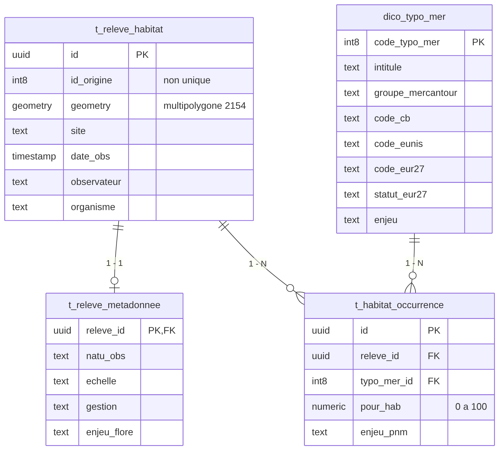

habitats
Description
Ce schéma contient la cartographie des habitats naturels du Parc national du Mercantour. Il rassemble des cartographies réalisées lors de plusieurs projets, fusionnées dans une même couche (t_fusion_habitats_vegetation), puis réorganisées ici sous la forme d'une base de données relationnelle.
Chaque polygone correspond à un secteur observé. Un polygone peut porter plusieurs habitats (une mosaïque) : dans la couche d'origine, il pouvait en porter jusqu'à quatre ; le schéma actuel n'impose plus de limite.
Deux notions sont au centre du schéma :
- le
typo_mer: le code d'un habitat dans la typologie du Parc. Chaque code est décrit dans le dictionnairedico_typo_mer(intitulé, groupe, correspondances Corine Biotopes, EUNIS et EUR27, enjeu...) ; - le
pour_hab: le pourcentage du polygone couvert par cet habitat.
Les libellés de la typologie sont enregistrés sans accents
Par exemple Forets, Fourres ou Tres fort. Il faut les écrire ainsi dans les filtres et les requêtes.
Nomenclature à compléter
Une nomenclature métier complète reste à mettre en place. Pour l'instant, de nombreux champs descriptifs sont stockés en text et leurs valeurs ne sont pas toutes encadrées par des listes de référence. Les valeurs documentées ici reflètent l'état actuel des données.
Projets Qgis associés
Vous trouverez la documentation du projet ici.
Tables remarquables
Le schéma est constitué de 4 tables et de 3 vues.

Les quatre tables du schéma (extrait des colonnes). Un polygone a au plus une ligne de métadonnées et autant de lignes d'occurrences que d'habitats présents.
Tables
| Nom de la table | Description |
|---|---|
| t_releve_habitat | Un polygone cartographié : sa géométrie, le site, la date, l'observateur et l'organisme. |
| t_releve_metadonnee | Les informations complémentaires sur le polygone (méthode, gestion, altitude, enjeu flore...). Au plus une ligne par polygone. |
| t_habitat_occurrence | Un habitat présent sur un polygone, avec le pourcentage du polygone qu'il couvre (pour_hab). C'est la table à interroger pour savoir quels habitats se trouvent où. |
| dico_typo_mer | Le dictionnaire des habitats : un typo_mer par ligne, avec sa description. |
Vues
Les vues recomposent les tables pour la cartographie et l'analyse. Elles sont en lecture seule et sont celles utilisées par le projet QGIS.
| Nom de la vue | Une ligne par | Description |
|---|---|---|
| v_releve_dominant | polygone | L'habitat dominant de chaque polygone, la composition complète de la mosaïque, la part Natura 2000 et les métadonnées. Couche principale du projet. |
| v_occurrence_carto | habitat sur un polygone | Chaque habitat avec la géométrie de son polygone et sa surface. Permet de cartographier un habitat précis, même quand il n'est pas dominant. |
| v_stats_habitat | habitat de la typologie | Nombre de polygones et surface de chaque habitat, y compris les habitats jamais observés. Sans géométrie. |
Description des colonnes remarquables
Ne sont décrites ici que les colonnes remarquables, ou dont le nom pourrait prêter à confusion.
t_releve_habitat
| Nom de la colonne | Type | Description |
|---|---|---|
| id | (PK) uuid | Identifiant du polygone |
| id_origine | int8 | Identifiant du polygone dans la couche d'origine. Il n'est pas unique (plusieurs polygones peuvent le partager) : il sert à retrouver l'origine d'un polygone, pas à faire une jointure. |
| geometry | multipolygone | Contour du polygone, en Lambert-93 (EPSG:2154) |
| site | text | Site cartographié |
| date_obs | timestamp | Date de l'observation |
| observateur | text | Observateur |
| organisme | text | Organisme ayant réalisé l'observation |
t_releve_metadonnee
| Nom de la colonne | Type | Description |
|---|---|---|
| releve_id | (PK, FK) uuid | Polygone concerné (t_releve_habitat.id) |
| natu_obs, unit_vege, echelle, grand_type, legende | text | Informations de méthode : nature de l'observation, unité de végétation, échelle, grand type, légende |
| gestion, gestion_b | text | Informations sur la gestion du milieu |
| alt_obs, alt_grille | text | Altitude, observée ou issue de la grille |
| enjeu_flore | text | Enjeu flore |
| ec_exp, comm_exp, grille_ec, note_ec | text | Informations issues de la couche d'origine : expertise, commentaire, grille et note |
t_habitat_occurrence
| Nom de la colonne | Type | Description |
|---|---|---|
| id | (PK) uuid | Identifiant de l'occurrence |
| releve_id | (FK) uuid | Polygone sur lequel l'habitat est présent (t_releve_habitat.id) |
| typo_mer_id | (FK) int8 | Habitat présent (dico_typo_mer.code_typo_mer) |
| pour_hab | numeric(5,2) | Pourcentage du polygone couvert par l'habitat, de 0 à 100. La somme sur un polygone devrait être proche de 100, sans que ce soit imposé : les données de terrain ne sont pas toujours exactes. Peut être vide. |
| enjeu_pnm | text | Enjeu propre à cette occurrence (ancienne colonne ENJEU_PNM_i de la couche d'origine) |
Un même habitat ne peut figurer qu'une fois sur un polygone (contrainte d'unicité sur releve_id et typo_mer_id).
dico_typo_mer
| Nom de la colonne | Type | Description |
|---|---|---|
| code_typo_mer | (PK) int8 | Code de l'habitat dans la typologie du Parc |
| intitule | text | Nom de l'habitat |
| groupe_mercantour | text | Grand groupe d'habitats : Forets, Pelouses, Milieux rocheux, Fourres, Zones humides, Friches, Landes, Megaphorbiaies |
| groupe_mer_pelouses | text | Comme groupe_mercantour, avec les pelouses détaillées par type (par exemple Pelouses calcicoles de crete) |
| groupe, sous_groupe, sous_sous_groupe | text | Niveaux de classement plus fins |
| rata_ordre, rata_allia, rata_assoc | text | Rattachement phytosociologique : ordre, alliance, association. La valeur A definir ou A preciser indique un rattachement à compléter. |
| code_cb, lib_cb | text | Code et libellé Corine Biotopes |
| code_eunis, lib_eunis | text | Code et libellé EUNIS |
| code_eur27, lib_eur27 | text | Code et libellé de l'habitat d'intérêt communautaire (Natura 2000, EUR27). Vides si l'habitat n'est pas concerné. |
| statut_eur27 | text | IC : habitat d'intérêt communautaire, PR : habitat prioritaire, NC : non concerné |
| enjeu | text | Enjeu associé à l'habitat dans la typologie : Tres fort, Fort, Moyen, Faible ou Non defini |
| fiche_merc | text | Fiche descriptive de l'habitat, quand elle existe |
| code_guide_habitats_alpes | text | Code de l'habitat dans le guide des habitats naturels et semi-naturels des Alpes |
v_releve_dominant
| Nom de la colonne | Type | Description |
|---|---|---|
| id | uuid | Identifiant du polygone |
| typo_mer_dominant, habitat_dominant, pour_hab_dominant | int8, text, numeric | L'habitat dominant : son code, son nom et son pourcentage |
| groupe_mercantour, enjeu, code_cb, code_eunis, code_eur27, statut_eur27... | text | Description de l'habitat dominant, reprise du dictionnaire |
| nb_habitats | bigint | Nombre d'habitats présents sur le polygone |
| mosaique | boolean | Vrai si le polygone porte plus d'un habitat |
| total_pour_hab | numeric | Somme des pourcentages des habitats du polygone |
| composition | text | Liste des habitats du polygone, du plus au moins couvrant, un par ligne (121 - Nom de l'habitat (60 %)) |
| natura2000 | boolean | Vrai si au moins un habitat du polygone est d'intérêt communautaire ou prioritaire (statut_eur27 = IC ou PR), quel que soit son pourcentage |
| pour_hab_n2000 | numeric | Part du polygone couverte par des habitats Natura 2000 |
| prioritaire | boolean | Vrai si au moins un habitat prioritaire (PR) est présent |
| surface_ha | numeric | Surface du polygone, en hectares |
| natu_obs, unit_vege, echelle... | text | Métadonnées du relevé, reprises de t_releve_metadonnee |
L'habitat dominant est celui qui a le plus fort pour_hab. À égalité, c'est celui qui a le plus petit code typo_mer. Un polygone sans habitat n'a pas d'habitat dominant.
v_occurrence_carto
| Nom de la colonne | Type | Description |
|---|---|---|
| id | uuid | Identifiant de l'occurrence |
| releve_id | uuid | Polygone concerné |
| typo_mer_id, habitat | int8, text | Code et nom de l'habitat |
| pour_hab | numeric | Pourcentage du polygone couvert par l'habitat |
| surface_ha | numeric | Surface occupée par l'habitat : surface du polygone × pour_hab / 100, en hectares |
| groupe_mercantour, enjeu, statut_eur27... | text | Description de l'habitat, reprise du dictionnaire |
| natura2000 | boolean | Vrai si l'habitat est d'intérêt communautaire ou prioritaire |
Les surfaces sont planimétriques
surface_ha est calculée sur la carte, en Lambert-93, et non sur le relief. En montagne, la surface réelle du terrain est plus grande. Une occurrence sans pour_hab n'a pas de surface.
Documentation pour utilisateurs avancés et maintenance
Exemples de requêtes
Surface de chaque groupe d'habitats :
SELECT groupe_mercantour, round(sum(surface_ha), 1) AS surface_ha
FROM habitats.v_occurrence_carto
GROUP BY groupe_mercantour
ORDER BY surface_ha DESC;
Tous les polygones où un habitat est présent, même s'il n'est pas dominant (ici le typo_mer 98) :
SELECT r.id, r.site, o.pour_hab
FROM habitats.t_habitat_occurrence o
JOIN habitats.t_releve_habitat r ON r.id = o.releve_id
WHERE o.typo_mer_id = 98
ORDER BY o.pour_hab DESC NULLS LAST;
Surface des habitats prioritaires, habitat par habitat :
SELECT typo_mer_id, habitat, count(*) AS nb_polygones, round(sum(surface_ha), 1) AS surface_ha
FROM habitats.v_occurrence_carto
WHERE statut_eur27 = 'PR'
GROUP BY typo_mer_id, habitat
ORDER BY surface_ha DESC;
Les polygones en mosaïque, avec leur composition :
SELECT site, habitat_dominant, pour_hab_dominant, replace(composition, E'\n', ' | ') AS composition
FROM habitats.v_releve_dominant
WHERE mosaique
ORDER BY site;
Les habitats de la typologie jamais observés :
SELECT code_typo_mer, intitule
FROM habitats.v_stats_habitat
WHERE nb_polygones = 0
ORDER BY code_typo_mer;
Dépendances
- Les tables ont été créées à partir de la table
habitats.t_fusion_habitats_vegetation(la couche d'origine, au format « large » :TYPO_MER_1à4,POUR_HAB_1à4). dico_typo_mera été chargé depuis le fichier de la typologie des habitats du Parc (Typologie_habitats_PNMercantour_Correspondances_table_Attributaire_Cartographie_Habitats_Rattachement_UFL.csv), dont seules les colonnes de classification et de correspondance ont été retenues.- Les vues dépendent des quatre tables et utilisent
ST_Area(PostGIS) pour calculer les surfaces.
Choix de conception
La couche d'origine plaçait les habitats dans des colonnes numérotées (TYPO_MER_1 à TYPO_MER_4, avec leurs pourcentages) : c'est une relation « un polygone, plusieurs habitats » écrite en colonnes. Le schéma la remplace par une table d'occurrences, une ligne par habitat. Les choix qui en découlent :
| Choix | Raison |
|---|---|
| Une table d'occurrences, une ligne par habitat | Pas de limite à quatre habitats, et une requête simple pour retrouver un habitat quel que soit son rang. |
Identifiants uuid, avec id_origine conservé |
Des clés robustes, tout en gardant la trace de l'ancien identifiant. (uuid plutôt qu'id pour intégration dans QFieldCloud) |
id_origine sans contrainte d'unicité |
L'identifiant de la couche d'origine n'est pas unique. Il ne doit jamais servir de clé de jointure. |
| Pas de colonne « rang » | La position (1 à 4) n'a pas de sens pour l'habitat. L'importance se lit dans pour_hab. À la place, un habitat ne peut figurer qu'une fois par polygone. |
| Colonnes Corine Biotopes, EUNIS, EUR27 retirées de l'occurrence | Ce sont des attributs de l'habitat, déjà dans dico_typo_mer : les recopier sur chaque ligne ferait diverger les copies. Une jointure les restitue (voir les vues). |
Intitulé de l'habitat (INTIT_MER_i) retiré |
Redondant avec dico_typo_mer.intitule. |
enjeu_pnm conservé sur l'occurrence |
Il peut différer de l'enjeu du dictionnaire. |
| Métadonnées dans une table à part | t_releve_habitat ne garde que l'essentiel : où, quand, qui. |
| Pourcentages additionnés pour un habitat répété | Quand le même typo_mer figurait sur deux rangs d'un polygone, les deux pourcentages ont été additionnés (à priori ça ne concernait aucun polygone chez nous). |
pour_hab limité à 0-100, sans contrôle de la somme |
Les données de terrain ne totalisent pas toujours 100 ; le contrôle se fait par requête (voir plus bas). |
Migration des données
La migration est faite par le script de création. Deux points techniques méritent d'être connus :
- l'
idde la couche d'origine n'étant pas unique, une jointure sur cet identifiant multiplierait les lignes. Le script rattache chaque ligne source à son nouveau polygone parctid(identifiant physique de ligne), dans une table temporaire ; - les habitats dont le
typo_merest absent du dictionnaire font échouer la migration (une vérification avec la partie 3 du script de contrôle - voir plus bas - est vivement recommandée).
Contrôler la migration
Le fichier controle_migration.sql regroupe sept requêtes de contrôle. Les quatre dernières ne doivent rien retourner, ou seulement des cas compris :
- nombre de polygones, source et cible ;
- nombre d'habitats, avant et après regroupement des doublons ;
typo_merde la source absents du dictionnaire (à checker avant de lancer la migration, elle échoue sinon) ;- comparaison détaillée, par
id_origineet partypo_mer, entre la source recalculée et la cible : aucune ligne signifie que la migration est cohérente ; - polygones où le même
typo_merfigurait sur plusieurs rangs ; - polygones dont la somme des pourcentages s'écarte de 100 de plus de 5 points ;
- occurrences sans pourcentage.
Limite de la comparaison détaillée
Elle regroupe par id_origine. Si deux polygones distincts partagent le même id_origine, le contrôle valide leur groupe, pas chacun d'eux.
Code de création des tables
- Tables et migration : creation.sql
- Contrôles après migration : controle_migration.sql
- Vues : vues.sql
Le script de création charge le dictionnaire avec la commande \copy, propre à psql : il faut le lancer avec psql depuis le dossier qui contient le fichier CSV du dictionnaire. En pratique le script est lancé par bloc à la main.